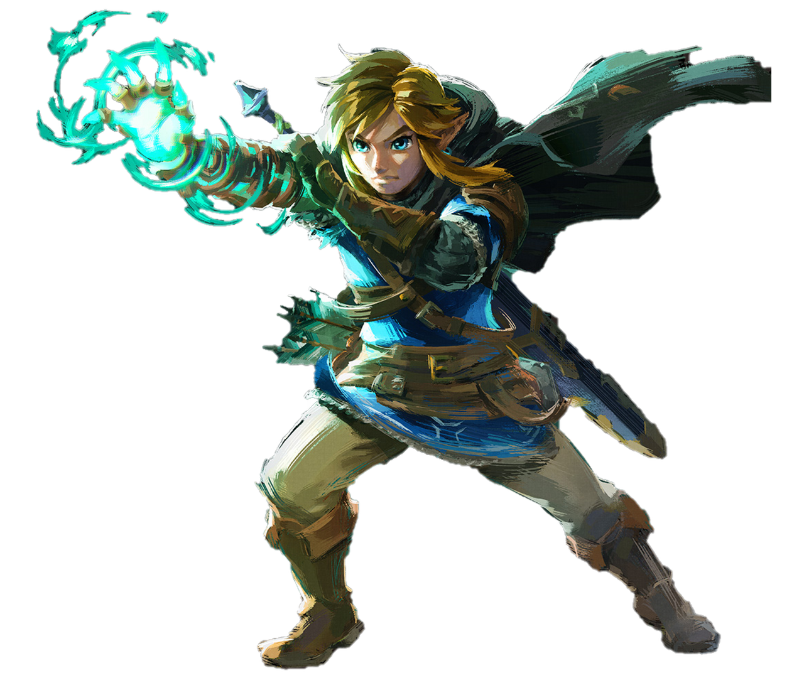
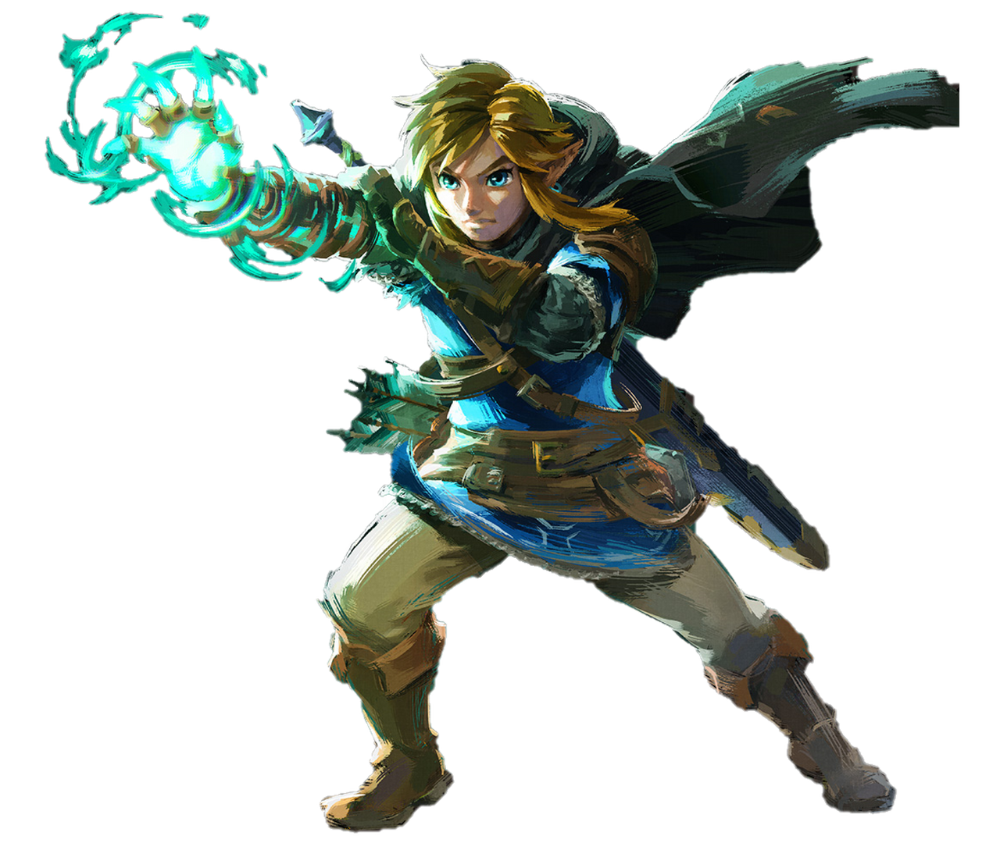

2023
The Legend of Zelda: Tears of the Kingdom
Join Link in a new adventure where you will not only continue to explore the vast land of Hyrule but in this installment you will go to the sky and beyond. This time Link will have to climb to heights never seen before, in this installment is given a high importance to exploration vertically. In addition you will have to make use of the new improved version of the paravela where you can fly over Hyrule at high speed and thus cover more territory. Once again Link will have to face all the adversities that he finds on his way to try to save the kingdom of Hyrule from the most absolute misfortune.


 
